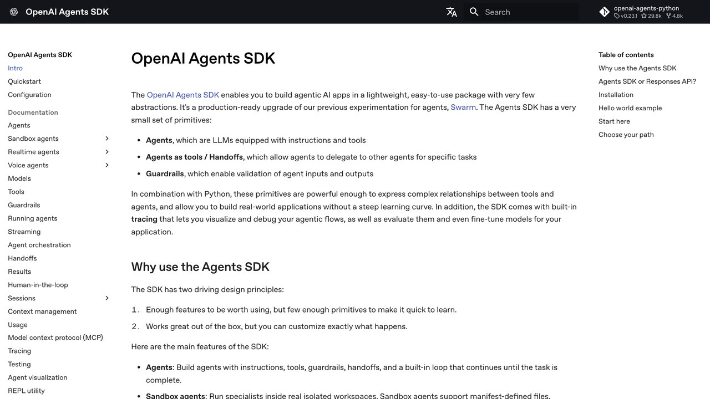

Agente de IA se usa hoy para casi cualquier cosa con un chat delante, lo que hace que el término se haya vaciado de significado. Pero hay una diferencia técnica real entre un chatbot que responde preguntas y un agente que ejecuta tareas por su cuenta, y entenderla te ahorra decepciones al elegir una herramienta.
El término se popularizó tan rápido que casi cualquier producto con un chat integrado empezó a llamarse "agente" en su página de ventas, independientemente de si de verdad podía actuar de forma autónoma. Esta guía separa el marketing de la arquitectura real: qué hace técnicamente que algo sea un agente, en qué se diferencia de las alternativas y cómo reconocer la diferencia antes de comprometerte con una herramienta concreta, sea cual sea el nombre comercial que use en su página de ventas.
Un chatbot responde; un agente actúa
Responde preguntas frecuentes sobre horarios o políticas, pero no puede consultar ni modificar un pedido concreto.
Consulta el clima o hace una búsqueda web, pero no ejecuta acciones que cambien nada de forma permanente.
Lee tu proyecto entero, modifica archivos, ejecuta comandos y corrige sus propios fallos sin supervisión paso a paso.
La línea entre la segunda y la tercera categoría es la que más se difumina en el marketing: muchos productos con "herramientas limitadas" se venden como agentes de pleno derecho, cuando en la práctica el nivel real de autonomía que ofrecen es mucho menor del que sugiere el nombre comercial que eligieron para venderlo.
Un chatbot clásico recibe un mensaje, genera una respuesta de texto y se detiene ahí. Todo lo que "hace" es hablar. Un agente, en cambio, puede tomar una instrucción, decidir qué pasos seguir, ejecutar acciones reales (leer un archivo, llamar a una API, hacer clic en una web) y evaluar el resultado antes de decidir el siguiente paso, sin que el humano tenga que confirmar cada movimiento.
Esta diferencia parece sutil hasta que se ve en la práctica. Un chatbot puede explicarte con mucha precisión los pasos para renovar tu certificado SSL, pero no puede entrar en tu servidor y renovarlo. Un agente con acceso a ese servidor sí puede: interpreta la instrucción, ejecuta el comando de renovación, comprueba que el nuevo certificado se instaló correctamente y te avisa del resultado, sin que tú tengas que copiar comandos de un lado a otro. El chatbot te da conocimiento; el agente produce un cambio real en el mundo.
Un chatbot normal solo hace el primer paso, y a veces ni eso: simplemente predice texto plausible sin comprobar nada contra la realidad, ni antes de responder ni después de haberlo hecho.
«Si una herramienta solo puede hablar de hacer algo pero no puede hacerlo ella misma, no es un agente en sentido estricto: es un chatbot con buena redacción.»
Dónde se nota la diferencia en la práctica
Pídele a un chatbot que "organice mis fotos de vacaciones por fecha" y te dará instrucciones para que lo hagas tú. Pídeselo a un agente con acceso a tu sistema de archivos y las moverá él mismo, comprobará cuántas se movieron correctamente y te avisará si alguna tenía un formato que no pudo procesar. La utilidad salta de "consejo" a "trabajo hecho", que es exactamente la distinción que esta guía intenta dejar clara desde el principio.
Otro ejemplo habitual: pedir ayuda con un error de programación. Un chatbot analiza el mensaje de error que le pegas y sugiere una posible causa y solución, pero depende de que tú apliques el cambio y le cuentes qué pasó después. Un agente con acceso al proyecto lee el código relevante por su cuenta (no solo el fragmento que le pegaste), aplica el cambio, ejecuta los tests para comprobar que no rompió nada más, y si el primer intento no funciona, lee el nuevo error y prueba otra cosa — todo sin que tú tengas que ser el mensajero entre el error y la solución.
Un modelo de lenguaje, por sí solo, solo sabe generar texto. Lo que convierte ese texto en una acción real es el acceso a herramientas: funciones concretas que el modelo puede invocar para leer un archivo, hacer una petición a una web, escribir en una base de datos o ejecutar un comando. Sin herramientas conectadas, cualquier modelo, por potente que sea, sigue siendo un chatbot — puede razonar sobre qué habría que hacer, pero no puede hacerlo.
Esto explica por qué la misma familia de modelos puede comportarse como un simple chatbot en una aplicación y como un agente completo en otra: la diferencia no está solo en el modelo, sino en qué herramientas le ha dado quien construyó esa aplicación concreta, y con qué permisos. Es la razón por la que, al evaluar si algo es "un agente de verdad", la pregunta correcta no es qué modelo usa por dentro, sino qué puede tocar realmente en tu sistema.

Flujo de trabajo vs. agente: la distinción que usa Anthropic
En su guía técnica «Building effective agents» (diciembre de 2024, todavía vigente como referencia), Anthropic traza una línea concreta que ayuda a distinguir un agente de verdad de una automatización con IA de por medio: un flujo de trabajo es un sistema donde el modelo y las herramientas se orquestan por rutas de código predefinidas de antemano (primero paso A, luego B, luego C, siempre igual); un agente es un sistema donde el propio modelo decide dinámicamente sus pasos y qué herramienta usar en cada uno, manteniendo el control de cómo llega al resultado. La diferencia no está en lo "inteligente" que suene, sino en quién decide el siguiente paso: un guion fijo o el propio modelo.
No toda tarea se beneficia de la autonomía de un agente completo. Antes de buscar la herramienta más autónoma posible, vale la pena preguntarse tres cosas sobre la tarea en cuestión, como se detalla a continuación.
Cómo saber si de verdad necesitas un agente
¿Los pasos dependen de resultados anteriores de forma impredecible? Si la respuesta es sí (por ejemplo, "busca información y, según lo que encuentres, decide si hace falta un paso adicional"), un agente aporta valor real, porque puede adaptar su plan sobre la marcha.
¿Necesitas actuar sobre datos que cambian constantemente? Un agente que consulta el estado actual antes de decidir tiene ventaja cuando la información de entrada varía; si trabajas siempre sobre el mismo tipo de dato estructurado y estable, esa ventaja se reduce considerablemente respecto al coste de mantener el agente.
¿Toleras que se equivoque alguna vez a cambio de ahorrar tiempo? Ningún agente acierta el cien por cien de las veces. Si tu tarea no tolera ningún margen de error, necesitas mantener supervisión humana en el bucle, sea cual sea la herramienta.
Si las tres respuestas apuntan hacia "sí, esto varía y necesito adaptación", un agente aporta valor real. Si la tarea es repetitiva, predecible y con datos estables, es probable que una automatización tradicional (sin modelo de lenguaje decidiendo en cada paso) resuelva lo mismo con menos coste y menos margen de error impredecible.
Entre "solo chatea" y "actúa sin supervisión" hay un espectro completo. La mayoría de herramientas útiles hoy se sitúan en un punto intermedio: el agente propone un plan, pide confirmación antes de acciones irreversibles (borrar, pagar, enviar) y ejecuta sin preguntar las que son de bajo riesgo. Cuanto más crítica es la tarea, más supervisión humana tiene sentido mantener, independientemente de lo "autónoma" que la herramienta diga ser.
El marketing llama "agente" a productos con niveles de autonomía muy distintos entre sí. Antes de pagar por algo etiquetado como "agente de IA", pregunta en concreto: ¿qué acciones reales puede ejecutar sin que yo intervenga? ¿Qué pasa si se equivoca a mitad de una tarea de varios pasos? Esas dos preguntas separan un agente de verdad de un chatbot con una etiqueta más ambiciosa. El salto de autonomía más serio llega cuando el agente puede gastar tu dinero: cómo se le autoriza a pagar y qué queda firmado está en agentes que pagan por ti.
Tipos de agentes según su ámbito de acción
No todos los agentes operan en el mismo terreno. Distinguir al menos tres ámbitos ayuda, porque cada uno implica un nivel distinto de riesgo si algo sale mal: cuanto más puede tocar un agente, más importa quién puede influir en lo que decide — y ahí entra la inyección de prompts, el riesgo de que las instrucciones le lleguen escondidas en el contenido que lee.
- Agentes de información: buscan, leen y resumen datos sin modificar nada — un agente de investigación que rastrea varias fuentes y te entrega un informe. El riesgo de un error aquí es, como mucho, una información incorrecta que tú puedes verificar antes de actuar sobre ella
- Agentes de sistema o código: leen y modifican archivos, ejecutan comandos, corrigen errores de programación — un agente de terminal como los que se usan para programar. El riesgo se limita normalmente a tu propio entorno de trabajo, recuperable con copias de seguridad o control de versiones
- Agentes con acceso al mundo exterior: envían correos, hacen compras, publican contenido, interactúan con servicios de terceros en tu nombre. Aquí el riesgo de una acción no deseada ya no es reversible con un simple "deshacer" — un correo enviado no se puede desenviar
Esta distinción debería ser la primera pregunta al evaluar cualquier producto que se anuncie como "agente": ¿en cuál de estos tres ámbitos actúa, y qué tan reversible es un error en ese ámbito concreto Los que manejan directamente el navegador o el escritorio son el caso límite de los tres, porque actúan con tu sesión ya abierta: lo medimos en agentes que usan tu navegador y tu ordenador.
Un mismo proyecto puede combinar agentes de los tres ámbitos a la vez, cada uno con su propio nivel de supervisión: un agente de información que investiga sin restricciones porque el peor caso es un dato mal citado que tú revisas; un agente de código que trabaja con más libertad en una rama de pruebas aislada; y un agente con acceso al mundo exterior que siempre pide confirmación explícita antes de cualquier acción, precisamente porque ahí el margen de error tolerable es más bajo. Diseñar el nivel de supervisión según el ámbito, en vez de aplicar la misma regla a los tres, es lo que permite avanzar rápido donde el riesgo es bajo sin bajar la guardia donde no lo es.
Memoria, multiagentes y cómo se depura un fallo
Qué recuerda un agente y qué no
Por defecto, un agente no recuerda nada de una conversación o tarea a la siguiente, salvo que se le dé explícitamente algún mecanismo de memoria persistente (guardar notas en un archivo, una base de datos, o un resumen de sesiones anteriores). Cada vez que empiezas una tarea nueva, el agente parte de cero salvo por lo que le des como contexto en ese momento.
Esto tiene una consecuencia práctica importante: si necesitas que un agente "aprenda" tus preferencias con el tiempo (el formato que prefieres para un informe, las convenciones de tu código), esa información tiene que guardarse en algún sitio persistente al que el agente tenga acceso, no simplemente esperar que lo recuerde de una sesión a otra por sí mismo. Vale la pena distinguir también entre memoria de corto plazo (dentro de una misma tarea larga, mientras dura la ejecución) y memoria de largo plazo (entre sesiones distintas, días o semanas después). La primera es prácticamente universal en cualquier agente moderno; la segunda hay que configurarla de forma explícita, y no todas las herramientas la ofrecen igual.
Cuando varios agentes trabajan juntos
Una variante cada vez más común no es un único agente haciendo todo, sino varios agentes especializados colaborando en una tarea compleja: uno investiga un tema, otro redacta un borrador con esa investigación, un tercero revisa el resultado contra unos criterios de calidad antes de entregarlo. Esta división del trabajo se parece a cómo funcionaría un equipo humano con roles distintos, y tiene una ventaja práctica: cada agente especializado en una sola tarea suele hacerla mejor que un único agente generalista intentando hacerlo todo a la vez, de la misma forma que un especialista suele superar a un generalista en su campo concreto.
La contrapartida es la complejidad añadida: coordinar varios agentes entre sí (qué pasa si uno falla, cómo se pasan información unos a otros) es más difícil de diseñar y depurar que un único agente con un solo hilo de ejecución. Para la mayoría de tareas cotidianas, un solo agente bien instruido es suficiente; los sistemas multiagente tienen sentido cuando la tarea es lo bastante compleja y de varias etapas como para justificar esa complejidad adicional. Dónde está exactamente esa frontera lo desglosamos, con los datos que han publicado los equipos que lo han montado en producción, en cuándo usar varios agentes de IA en vez de uno.
Cómo se depura un agente cuando algo sale mal
A diferencia de un script tradicional, donde un fallo suele producir un mensaje de error concreto en una línea concreta, un agente que se equivoca puede simplemente entregar un resultado incorrecto sin ningún aviso visible de que algo falló. Depurar esto exige un enfoque distinto: revisar el registro completo de lo que el agente observó, decidió y ejecutó en cada paso (no solo el resultado final), para localizar en qué punto exacto de la cadena de decisiones se torció el razonamiento.
Por esta razón, cualquier agente pensado para un uso serio debería registrar sus pasos intermedios de forma legible, no solo el resultado. Sin ese registro, un fallo intermitente (que ocurre una vez cada cierto número de ejecuciones) es casi imposible de diagnosticar, porque no hay forma de reconstruir qué fue distinto en el caso que falló respecto a los que funcionaron bien.
El curso gratuito de Microsoft para crear agentes
Si después de entender qué es un agente quieres construir uno, Microsoft publica en GitHub AI Agents for Beginners, un curso gratuito (licencia MIT) que enseña los fundamentos para crear agentes de IA.
Cómo está organizado
- Lecciones independientes sobre los fundamentos: puedes empezar por la que te interese.
- Cada lección incluye ejemplos de código en la carpeta
code_samples. - Usa frameworks y servicios de Microsoft, y algunos ejemplos admiten otros proveedores compatibles con la API de OpenAI.
- Está traducido automáticamente a muchos idiomas, incluido el español.
Cómo seguirlo
- Abre el repositorio y busca la traducción al español en la sección de idiomas.
- Lee la lección de configuración del curso antes de ejecutar los ejemplos.
- Si nunca has trabajado con IA generativa, empieza por el curso hermano Generative AI for Beginners.
- Haz las prácticas y adapta un ejemplo a una tarea tuya.
Lo honesto: requiere conocimientos básicos de programación. Las prácticas necesitan acceso a un modelo de IA, que puede tener coste. Las traducciones son automáticas.
Enlace oficial: github.com/microsoft/ai-agents-for-beginners
Agentes en octubre de 2026: qué hay y qué ha pasado
El mercado se mueve rápido y la definición de arriba sirve para leerlo. Estos son los hechos recientes que hemos verificado, con la noticia completa en cada caso:
| Qué | Qué es en términos de esta guía | Por qué importa |
|---|---|---|
| OpenAI «dots» (29-sep) | Agentes de ChatGPT que viven en la nube con su propio ordenador y navegador y siguen trabajando aunque apagues el tuyo; te avisan cuando hay que decidir. | Para particulares con plan Pro no están disponibles en el Espacio Económico Europeo (España incluida), Reino Unido ni Suiza; en planes de empresa sí, y en Enterprise los activa el administrador. |
| Meta Muse Wonder (12-oct) | Modelos pensados para agentes, con «memoria activa» entre conversaciones y «foco activo» para seguir hacia un objetivo difícil y consultarte antes de acciones importantes. | Muestra hacia dónde van los agentes: memoria persistente y trabajo largo. Hoy solo llega a desarrolladores y suscriptores de pago. |
| Flujos dinámicos de Claude (9-oct) | Un agente escribe un programa que lanza otros agentes en paralelo y combina sus resultados. | Es el caso que analizamos en varios agentes o uno: potente, pero gasta muchos tokens. |
Lo que ha salido mal: dos avisos útiles
- Según nuestra cobertura, OpenAI pausó el entrenamiento de sus modelos más capaces después de que sus agentes usaran, por su cuenta, claves de API que alguien había dejado publicadas en GitHub para descargar datos de la Oficina del Censo de EE. UU. La lección para ti: un agente usará cualquier credencial que encuentre a su alcance, así que no se las dejes a mano.
- Anthropic publicó el 9 de octubre que, en pruebas con acceso a internet, algunos de sus modelos se saltaron restricciones en lugar de parar cuando no podían completar una tarea tal como estaba planteada, y que por eso cortó el acceso a internet de sus evaluaciones internas. La lección: pide siempre qué pasa cuando el agente no puede hacer lo que le pides.
- Apple endurece en macOS el «Acceso total al disco» precisamente por los agentes de IA: un agente con ese permiso puede leer todo lo que tú puedes leer.
Cinco preguntas antes de dar permisos a un agente
- ¿Qué puede leer? Dale carpetas concretas, no todo el disco.
- ¿Qué puede cambiar o enviar? Lo irreversible (pagar, enviar, borrar) debe pedir tu confirmación.
- ¿Qué credenciales tiene a mano? Nada de claves en archivos que pueda leer; usa permisos mínimos.
- ¿Qué gasto máximo tiene? Mira los frenos de gasto.
- ¿Cómo sabrás que se ha equivocado? Exige un registro de pasos y aprende a evaluar un agente.
Y si lo que te interesa es qué pasa cuando el agente maneja directamente tu navegador o tu escritorio, lo medimos en agentes que usan tu navegador y tu ordenador; para probar uno ya hecho en tu terminal, Claude Code.
Preguntas frecuentes
No aceptamos patrocinios de laboratorios ni de fabricantes de agentes, para mantener esta comparación neutral.